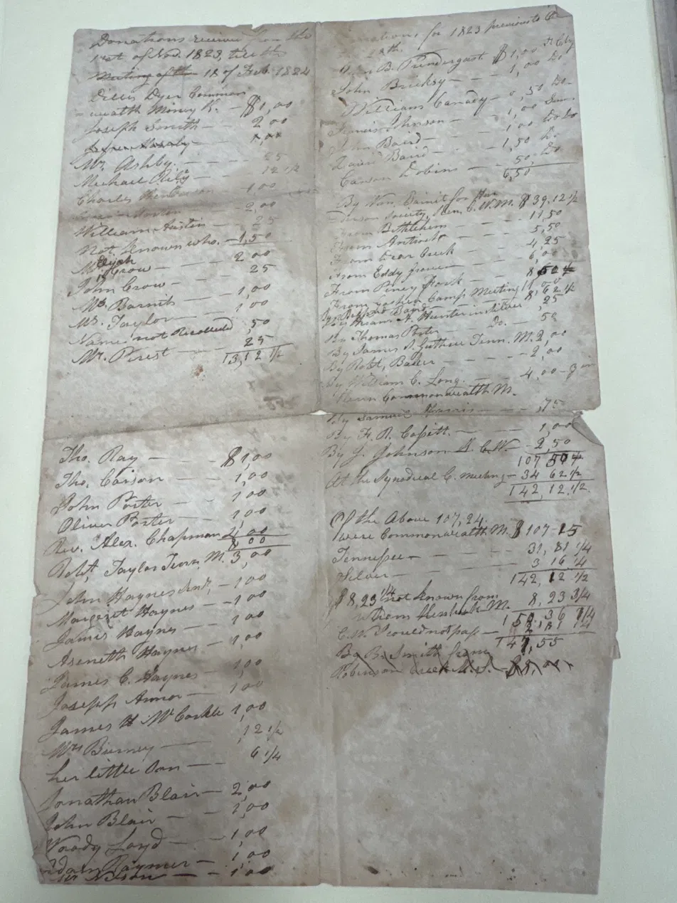

Follow the total.
One folded Charity Hall account reaches the same carried figure by two different accounting routes. This view lets the paper show the change before interpretation.

Back face — the two routes to 142,12 1/2 live here.
Hold one total. Watch the categories move underneath it.
Source-facing monetary notation retained. The historical accounting labels are not modernized here.
The added amount sits on a meeting-labeled line. The exact meeting wording is not yet secure.
Tennessee, Illinois, and M. are visible on the sheet; their accounting roles are not settled.
What changed?
The base drops from 107,50 to 107,15: a difference of 0,35.
The added grouping increases by that same 0,35.
The total does not move. The classification does.
The paper supplies a bridge.
The lower block begins with a source-facing reading approximately “Of the Above 107, 2/4.” A following line reads strongly as “Value Communicated M. $107-15.” Because 2/4 equals one-half, the paper itself places 107,50 beside 107,15.
So what does Tennessee mean? What does Illinois mean?
They are visibly separate accounting labels in Route B. Their exact institutional job is still open. This prototype does not turn them into geography, donor origin, or jurisdiction without another source earning that move.
What is “M.”?
It recurs immediately before dollar amounts and belongs to the accounting notation. Its expansion remains open.
Why show the front face at all?
The front carries an accounting-method note beginning “When I made out this report…” and appears to say that the value of a collect-/collection category was handled separately. That may explain the reclassification visible on the back, but the exact wording is not secure enough to close the question. Use the Front and Close-up buttons to inspect it.
Why is the front note transcribed cautiously?
An earlier reading treated it as “made a mistake.” Enlargement did not support that wording, so it was withdrawn. The present reading keeps the secure beginning and leaves the remaining words open.
What can a person do next?
Return to the image. Find the carried total, then find the two bases. Ask what category moved, what stayed fixed, and which words on the sheet could explain that movement. Only then open neighboring sources.
Before you leave the sheet
Which statement is supported by what you just saw?
Where each claim comes from
The images above are embedded so the core return travels as one file. These links return to the held source representations and the notes governing the reading.